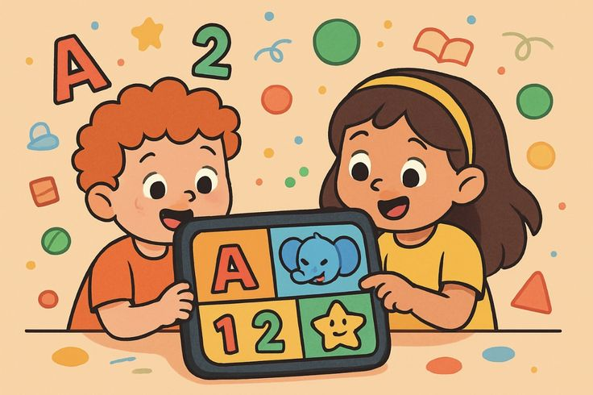
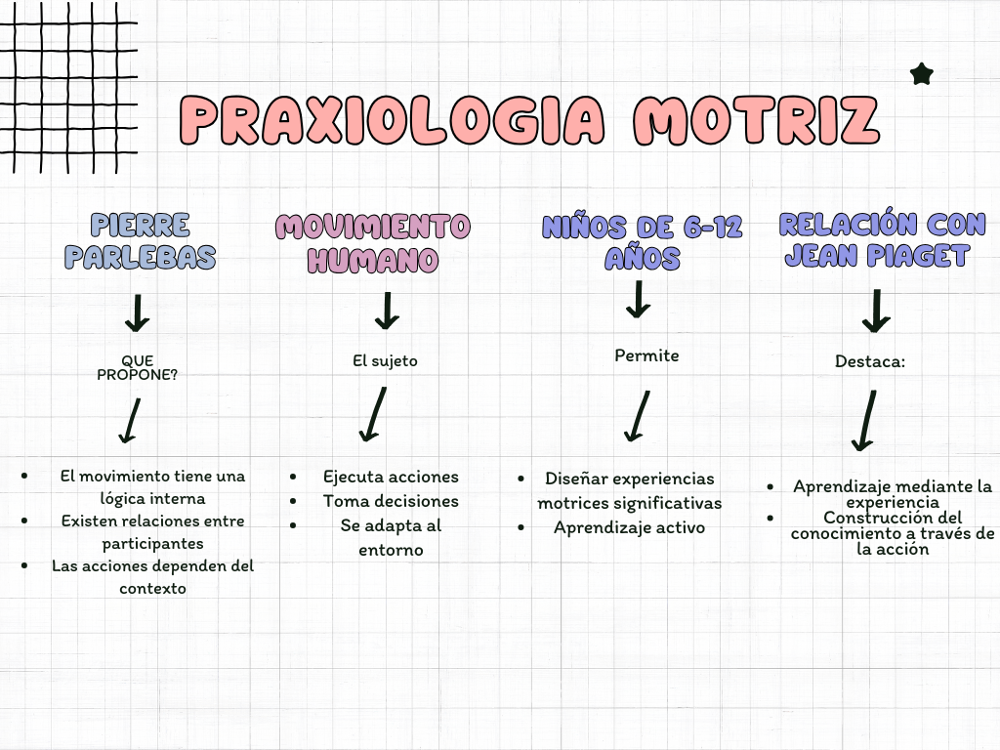
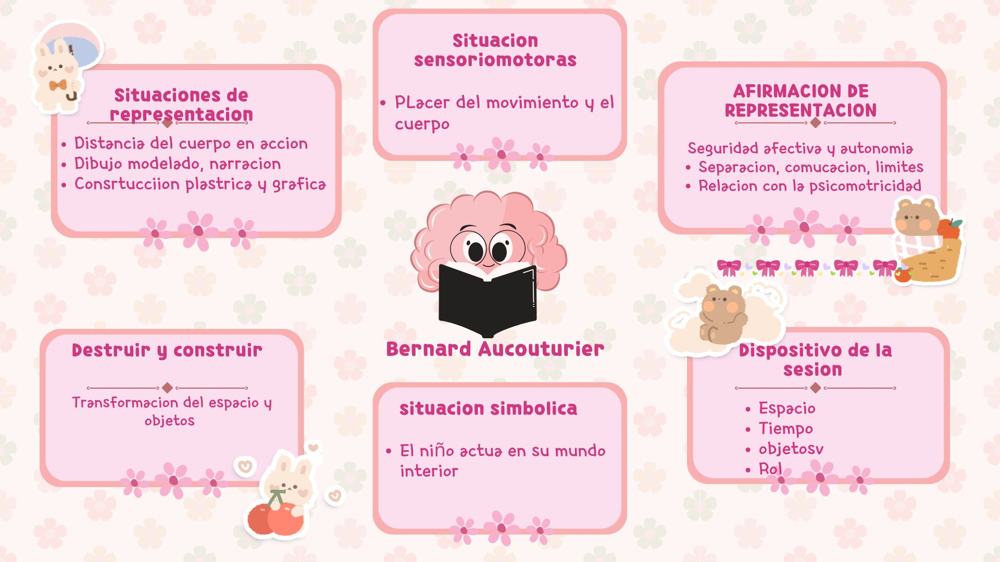
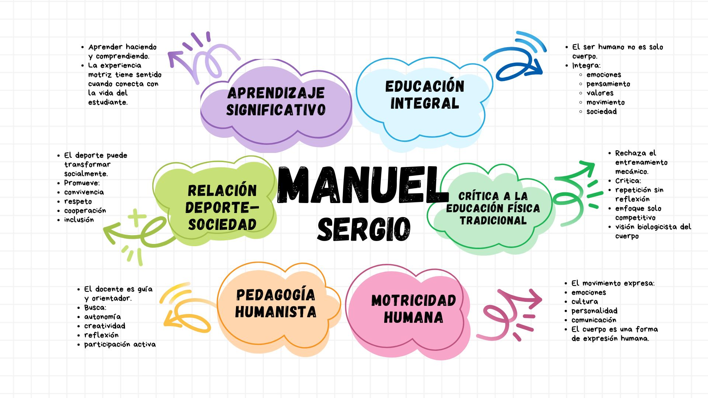
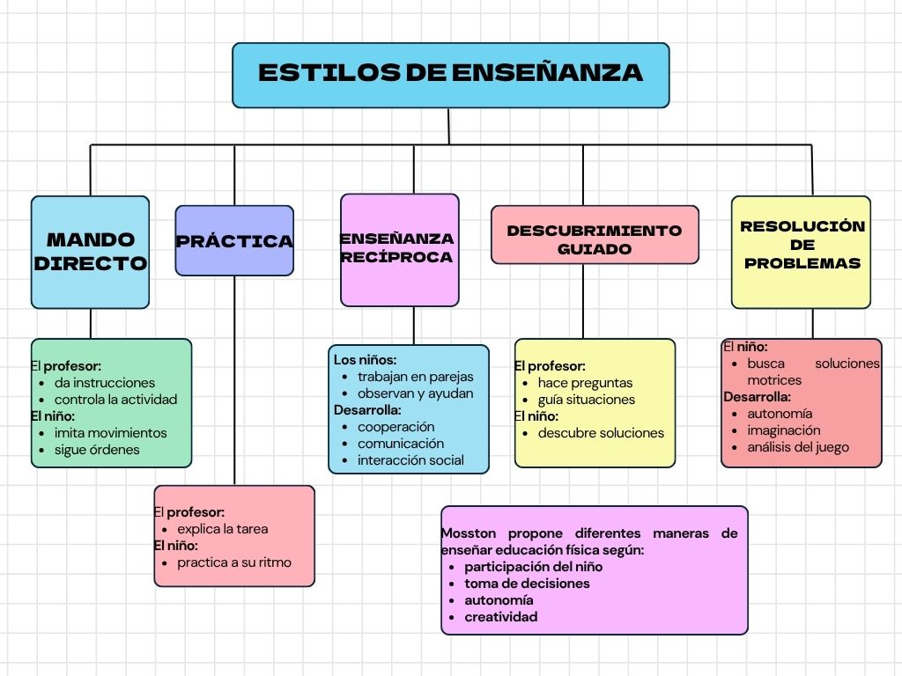
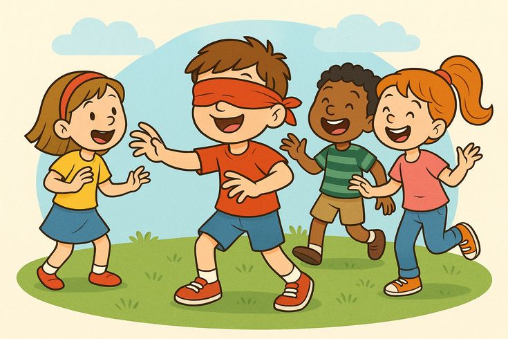
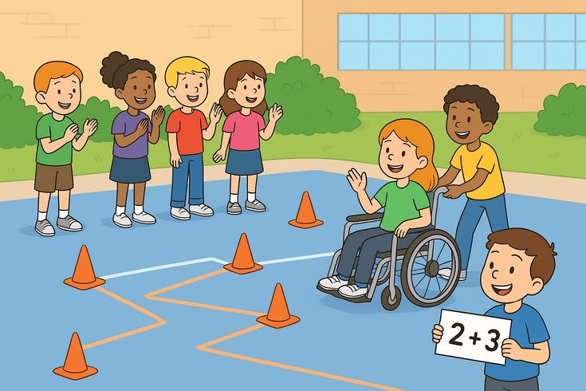
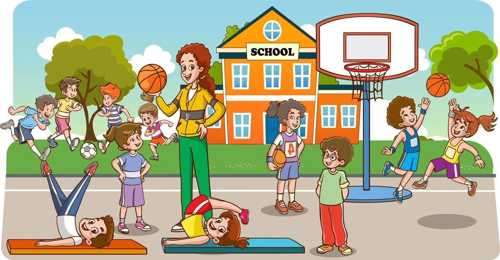

El Problema y los Objetivos

¿Qué está pasando?
Actualmente, muchos niños entre 6 y 12 años presentan:
- Bajo nivel de actividad física
- Dificultades en coordinación motriz
- Problemas en la interacción social
- Dependencia de dispositivos tecnológicos
Nuestros Objetivos
Desarrollar habilidades motrices, cognitivas y sociales mediante una propuesta pedagógica basada en el juego motor.
- Fortalecer habilidades motrices básicas
- Promover la cooperación y el trabajo en equipo
- Estimular la toma de decisiones
- Fomentar valores como respeto y empatía
Fundamentación Teórica
Conceptos clave de la Praxiología Motriz fundamentales para el desarrollo del proyecto.
1. Praxiología

2. Acción Motriz

3. Lógica Interna

4. Sistema de Interacción

5. Clasificación de Situaciones



Análisis Praxiológico
Clasificación de las situaciones motrices según Piaget y José María Cagical.

Situaciones Psicomotrices

El individuo actúa de manera individual, sin interacción con otros.
Ejemplos: ejercicios de equilibrio, saltos, circuitos motores.
Situaciones Sociomotrices
Se caracterizan por la interacción entre dos o más participantes.
- Cooperación: Lograr un objetivo común.
- Oposición: Enfrentamiento entre participantes.
- Coop-Oposición: Dinámicas combinadas (ej. deportes colectivos).

Juegos Interactivos
Juegos Interactivos
Parlebas
Pon a prueba tus conocimientos sobre la teoría de la acción motriz de Parlebas.
Jean Le Boulch
Aprende sobre el método de la psicocinética y la educación por el movement.
Vygotsky
Descubre la teoría sociocultural y su impacto en el desarrollo infantil.
Bruner
Juega y repasa la teoría del aprendizaje por descubrimiento y andamiaje.
Bernard
Adivina los conceptos clave de la teoría de la psicomotricidad según Bernard.
Manuel Sergio
Resuelve la sopa de letras sobre la motricidad humana.
Mosston
Pon a prueba lo aprendido sobre los estilos de enseñanza en educación física.
José María Cagigal
Responde Sí o No a las afirmaciones sobre el deporte y la pedagogía social.
Piaget
Gira la ruleta de palabras sobre los estadios del desarrollo cognitivo.
Evaluación del Aprendizaje

Instrumentos
- Lista de chequeo
- Observación directa
- Registro anecdótico
Indicadores
- Coordinación motriz
- Participación
- Trabajo en equipo
- Toma de decisiones
Resultados Esperados
- Mejora en habilidades motrices
- Mayor interacción social
- Incremento en motivación
Banco de Juegos

Juegos: 6-8 Años
Las islas que desaparecen(Parlebas)
Objetivo: Fomentar la cooperación, la comunicación no verbal y la resolución de problemas en grupo mediante restriccion progresiva del espacio compartido.
Materiales: Aros, hojas o colchonetas (simulan "islas").
Desarrollo: Se distribuyen varias "islas" en el espacio. Todos los niños deben ubicarse en ellas sin tocar el suelo. Progresivamente se reducen las islas, obligando a cooperar.
Progresión:Reducir el tamaño de cada aro-No comunicación-Limitar a un solo pie en la isla.
Regresión:Más aros al inicio-permitir contacto libre con el suelo.
Variantes:Islas con roles-Islas móviles.
El nudo humano (Parlebas)
Objetivo: Desarrollar la comunicación, el pensamiento estratégico colectivo y la coordinación motriz en grupos pequeños.
Materiales:Cuerpo propio, espacio abierto sin obstaculos.
Progresión:Grupos mas grandes, solo con señas.
Regresión:Guía verbal del docente.
Variantes:Nudo de pies, dos grupos compiten en tiempo.
El refugio mágico(Aucourtier)
Objetivo: Desarrollar la regulación emocional, la seguridad afectiva y la confianza.
Materiales: Colchonetas, telas o mantas, música suave de fondo opcional.
Desarrollo: Se crean espacios tipo "refugio" donde los niños pueden entrar cuando lo deseen. Luego regresan al juego general, respetando sus tiempos.
Progresión: Construcción colectiva de un refugio compartido, asignar roles simbólicos como guardíián, explorador, etc, compartir el refugio con invitados imaginarios.
Regresión:Refugio ya construido por el adulto el cual también puede estar presente durante el juego.
Variante:Refugios de distintas emociones con colores, conectar refugios con túneles de tela.
El gigante y el ratón(Aucourtier)
Objetivo: Trabajar la vivencia simbólica del poder y la fragilidad, la regulación tónica y al gestión de la agresividad a través del juego dramático.
Materiales: Colchonetas, bloques de gomaespuma, telas, espacio amplio.
Desarrollo:Un niño es el gigante el cual construye su castillo con bloques, los demás son ratones que intentan derrumbar el castillo cuando el gigante duerme. El gigante puede reconstruirlo. Los roles rotan. El docente observa.
Progresión:Gigante con aliados que lo defiendan y protegan, reglas inventadas y creadas por los propios niños, incluir un tesoro a proteger.
Regresión:Solo un ratón a la vez, gigante con los ojos abiertos con una construcción muy sencilla.
Variante: La bruja y los duendes, mismos esquema peor con version sonora se incluye sonido para que el gigante con los ojos vendados sea guiado por sonidos, castillo de almohadas y representación dibujada al final.
Juegos: 10-12 Años
El circuito de desafíos (Piaget)
Objetivo: Desarrollar la lógica, coordinación y resolución de problemas mediante experiencias concretas
Materiales:Aros, conos, cuerdad y pelotas.
Desarollo:Se crea un circuito con estaciones, los niños deben resolver retos motrices: Saltar en secuencia-Lanzar a un objetivo-Resolver pequeñas consignas-Cada reto exige análisis y adaptación.
Regresiones:Reducir número de estaciones-Hacer los recorrdios mas cortos.
Progresiones:Añadir reglas complejas-Combinar dos habilidades al mismo tiempo.
Variantes:Circuito por parejas o circuito con puntuación.
Construimos la Torre (Vygotsky)
Objetivo: Fortalecer el trabajo cooperativo, la comunicación y la resolución de problemas mediante la interacción social.
Materiales: Vasos plásticos, palitos de paleta, cinta y pelotas pequeñas.
Desarrollo: Se forman grupos de 4 o 5 años. Cada grupo debe contruir la torre mas alata posible, deben dialogar y organizar funciones. Gana la torre que soporte una pelota arriba sin caer.
Regresiones: Disminuir la altura requerida, permirir mas tiempo y utilizazr menos materiales.
Progresiones: Construir con una sola mano, agregar límite de tiempo e incluir obstáculos antes de tomar materiales.
Variantes:Construor una figura diferente, realizar el reto en silencio usando solo gestos.
Cadena de pases cooperativos(Vygotsky)
Objetivo: Estimular la interacción social y el aprendizaje colaborativo mediante actividades motrices.
Materiales: Balones y conos
Desarrollo:Los niños forman equipos, deben realizar una secuencia de pases sin dejar caer el balón, cada integrante debe participar antes de anotar, se promueve la ayuda verbal entre compañeros.
Regresiones:Reducir distancia entrenjugadores-usara balón mas liviano.
Progresiones:Limitar tiempo de pase-Agregar desplazamiento constabte.
Variantes:Pases con mano no dominante y pases sentados.
Atrapa el color(Piaget)
Objetivo: Estimular la percepción, clasificación y rapidez mental
Materiales:Cartulinas de colores y conos.
Regresiones:Menos colores u opciones-Más tiempo para responder.
Progresiones:Combinar dos consginas-Introducir pistas falsas.
Variantes:En relevos-con balón en las manos.